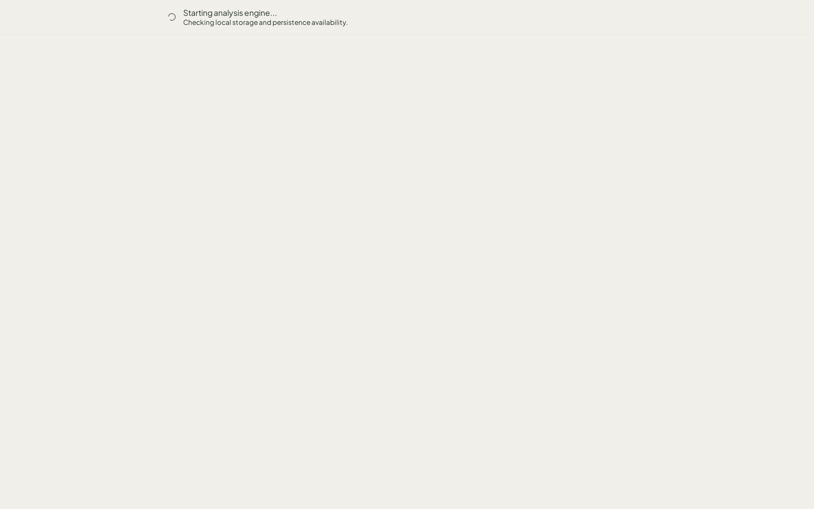

Local-first survey analysis.
From SAV to defensible deck.
Velocity runs entirely on the analyst's machine — WebAssembly ingestion, DuckDB analytics,
survey-native significance, and editable PPTX export. No respondent rows leave the browser.
Built for boutique agencies who receive .sav files
and need client-ready decks by Friday afternoon.
The commercial wedge
Velocity does not claim broad SPSS replacement. It owns one workflow with measurable targets from pilot_00_brief.md.
① Load SAV
ReadStat WASM → DuckDB → searchable variables
② Useful crosstab
Weights, labels, bases, significance
③ Editable slide
Native PPTX table/chart, minor touch-up
④ Reopen tomorrow
OPFS workspace + .velocity handoff
Architecture — three consumers, one engine
Click a layer to inspect responsibilities, entry points, and invariants. All paths converge on VelocityEngine — never on DuckDB directly from UI code.
VelocityEngine
Stateful orchestrator
Owns the database adapter, session state, analysis lifecycle, and deck materialization. Every consumer gets identical semantics.
src/engine/VelocityEngine.ts— ~730 lines, single authoritywrapEnvelope()— provenance on every outputDeckBuilder— sequential analysis execution (DuckDB is single-connection)
Browser path: EngineProxy → worker → engineDispatch.ts → handlers
Agent path: mcp-server/index.ts → direct engine instance
Request flow — crosstab query
React UI → EngineProxy.runAnalysis('crosstab', …)
UUID requestId · postMessage to worker
Worker → engineHandlers → VelocityEngine.runAnalysis()
Engine → buildCrosstabQuery() [core] → db.execute()
Engine → significance.ts [core] → applyCrosstabFormat()
Worker → ResultEnvelope { data, warnings, durationMs }
UI renders labels (never raw codes) + ▲▼ significance markers
MCP handler → VelocityEngine.runAnalysis() (same method, no postMessage)
Engine → core runners → ResultEnvelope
Agent calls velocity_build_deck → velocity_commit_deck → velocity_export_pptx
EVAL-04 proved browser and MCP produce materially comparable 5-slide decks on sleep.sav
The dual-state principle
Survey variables always carry integer codes (for compute) and display labels (for humans). Toggle to see why breaking this invariant causes silent errors.
Display labels (UI)
| Code | Label | N |
|---|---|---|
| Male | — | 150 |
| Female | — | 121 |
What DuckDB stores
| SEX | count |
|---|---|
| 0 | 150 |
| 1 | 121 |
tests/golden/expected/r_sleep_freq_sex.json (271-row sleep study).
Variable
Atomic unit with metadata
id, name, label, type, valueLabels[], missingValues
VariableSet
Grid / multi-select grouping
ResultEnvelope
Provenance wrapper
data, warnings[], durationMs, inputs
Survey-native statistics
Velocity is not generic BI. Weighting uses Kish ESS; comparisons use cell-vs-rest; tests use Welch's t. Every claim below has a committed golden fixture — inspect the evidence.
Methodology vs generic BI
| Principle | Velocity | Why it matters |
|---|---|---|
| Effective N | Kish ESS = n²/Σw² | Prevents false significance on weighted data |
| Comparison | Cell vs Rest | Avoids bias when total contains the subgroup |
| Proportions | Welch's t-test | Handles unequal variances + weights |
| Chi-square | Pearson, no Yates | Matches R chisq.test(correct=FALSE) |
Inspectable golden evidence
r_sleep_freq_sex.json — Velocity output matched against R haven + base R on test_data/sleep.sav (271 rows).
| SEX | N (Total) | Source |
|---|---|---|
| Code 0 | 150 | R + Velocity agree |
| Code 1 | 121 | R + Velocity agree |
View committed fixture JSON
[
{ "rowKey_0": 0, "colKey": "Total", "count": 150 },
{ "rowKey_0": 1, "colKey": "Total", "count": 121 }
]
significance_test.expected.json — Cell-vs-rest markers with Welch t-scores. Accent ▲▼ appear only on significant cells.
| Row | Col A | Col B |
|---|---|---|
| Group false | 10 ▼ | 100 ▲ |
| Group true | 100 ▲ | 10 ▼ |
View significance fixture (excerpt)
{ "rowKey_0": false, "colKey": "B",
"count": 100, "stats": { "tScore": 20.598, "pValue": 0 },
"sig": "high_95" }
wp42-five-minute-pass.json — Automated workflow on sleep.sav, captured 2026-07-04.
View benchmark steps timeline
dashboard-ready 1,289 ms slide-1-crosstab 1,691 ms slide-2-crosstab 6,853 ms slide-3-rows 10,064 ms pptx-saved 11,554 ms ← pass
Key results with evidence
Phase 4 validated the engine thesis. Four eval baselines are frozen. Trust claims are backed by reproducible CI gates — not slide-deck assertions.
Agent capability evals (frozen scorecards)
| Eval | Pattern | Engine | MCP | Deliverable | Notes |
|---|---|---|---|---|---|
| EVAL-01 Small deck · sleep.sav |
good_insight_painful_workflow | 4 | 2 | 4 | 9-slide PPTX coherent; deck-commit step initially missing from MCP docs |
| EVAL-04 Browser ↔ MCP convergence |
end_to_end_success | 5 | 4 | 5 | Same 5-slide analysis set; materially comparable PPTX + session artifacts |
Trust pack (PILOT-2)
Published June 2026
- 12 R parity tests (sleep + bsa93 weighted)
- 18 SPSS-style formula tests
- Brand tracker demo ground truth ±0.1pt
- SAV benchmarks through WVS Wave 7 scale
Reproduce: npm run test:run && npm run test:parity
Foundations shipped
Phases 1–4 + stabilization
- VelocityEngine + MCP + CLI convergence
- Harmonization workspace (cross-wave)
- OPFS workspace reopen (STAB-WS-1)
- Design-token CI (STAB-DS-1)
- UXR program complete (UXR-000–051 fixed)
Explicitly out of scope
Do not claim these
- Weight creation / raking / RIM
- Client PPTX template import
- Full SPSS / Displayr replacement
- Cloud upload or team governance
Codebase map
Click an area to see entry points and responsibilities. ~400+ TypeScript files; tests co-located throughout src/.
src/core/
Pure functions for analysis, ingestion, export, session codecs, semantic annotation, harmonization, and statistics. Must remain importable from Node without browser polyfills.
Hard parts — where complexity lives
These eight areas account for most onboarding time. Expand each for the why, the files, and the failure modes.
1Dual-runtime SAV ingestion3 paths must agree
SPSS files parse through ReadStat WASM (browser) or DuckDB read_stat (Node). Large files (>180 MB) use V3 streaming with adaptive chunk sizing and credit-based flow control. Any path divergence breaks golden parity.
2EngineProxy message protocol30+ message types
Every engine method serializes to typed postMessage with UUID correlation. Side-channel events (load progress, corruption) bypass the envelope. The serial queue means one long query blocks all others.
3OPFS persistence & corruption recoveryCOOP/COEP required
DuckDB OPFS needs SharedArrayBuffer + cross-origin isolation headers (vite.config.ts). Write-mode races quarantine corrupt DBs with .corrupt_ prefix. Reload must reconcile OPFS state against session metadata.
4Weighted significance testingR golden parity
ESS replaces raw n. Cell-vs-rest and pairwise modes with Bonferroni/BH-FDR correction. Must match R svytest within floating-point tolerance on committed fixtures.
5Grid / scale detectionHeuristic clustering
Likert grids (Q5_1…Q5_10) are detected via sequential naming, scale point matching, and Jaccard label similarity. False positives break the variable browser; false negatives lose grid view.
6Session file stabilityV1 → V2 migration
.velocity files serialize variables, transforms, slides, deck recipe, workspace snapshot, semantic state. Version bumps require forward migrations; field removals are breaking changes.
7Deck materialization pipeline4 representations
DeckRecipe (intent) → BuiltDeck (SQL rows) → MaterializedDeck (formatted) → PPTX binary. Fail-soft per slide: errors land in DeckBuildError[] without aborting the build. Significance glyphs and column letters must survive every hop.
8Semantic layer & guardrailsDeterministic heuristics
Variables annotated with (topic, measurementIntent). Concepts clustered by label Jaccard similarity. Guardrails warn on weight conflicts, topic mixing, sample size — must be deterministic for session round-trip.
Product surface — hub and spoke
The Analysis Canvas is the reading hub; Variable Manager is the high-density spoke overlay. Screenshots from the July 2026 user-journey capture on sleep.sav.



Design system — Evolved Soft Machine
Surfaces
--panel: #FDFCFA
--rail: #ECE9E3
Accent budget
Typography
Plus Jakarta Sans → chrome
JetBrains Mono → data cells
Contributor invariants
From AGENTS.md — violations here require explicit architecture review.
No DOM in core/engine
src/core/ and src/engine/ must remain importable from Node without browser polyfills.
Worker-side compute
Heavy analysis never runs on the main thread. UI talks to EngineProxy only.
Dual-state never broken
Codes compute; labels display. Never aggregate on label strings.
Thin transports
MCP handlers and worker handlers wire calls — no business logic in transports.
ResultEnvelope provenance
Every engine output wraps data with warnings, duration, and input metadata.
Session migrations only
.velocity version bumps add fields with defaults — never remove fields silently.
Get started
Clone, install the ReadStat submodule, run dev server with COOP/COEP headers. Verify with the same gates CI runs.